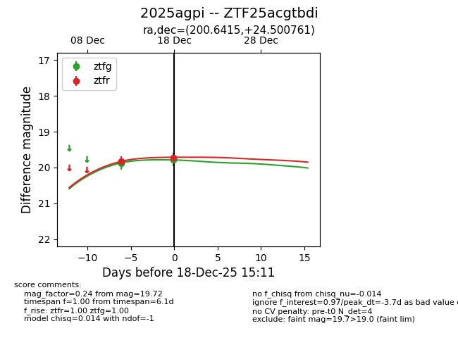
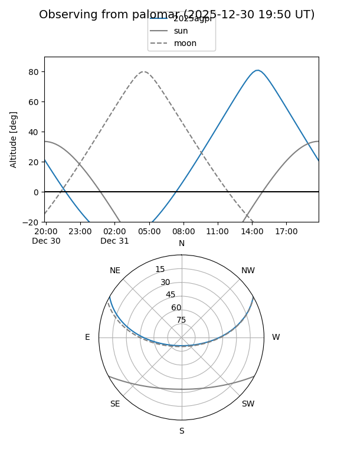

2025agpi
Target 2025agpi at 2025-12-18 11:18
Aliases and brokers:
FINK: fink-portal.org/ZTF25acgtbdi
Lasair: lasair-ztf.lsst.ac.uk/objects/ZTF25acgtbdi
ALeRCE: alerce.online/object/ZTF25acgtbdi
TNS: wis-tns.org/object/2025agpi
YSE: ziggy.ucolick.org/yse/transient_detail/2025agpi
alt names
ZTF25acgtbdi (ztf,fink_ztf)
2025agpi (tns,yse)
Coordinates:
equatorial (ra, dec) = 200.6415,+24.50076
equatorial (HMS+DMS) = 13:22:33.96,+24:30:02.74
galactic (l, b) = (14.1002,+82.51997)
Photometry
last ztfg=19.88, ztfr=19.82
1 ztfg, 1 ztfr detections
Lightcurve

Visibility


Additional plots